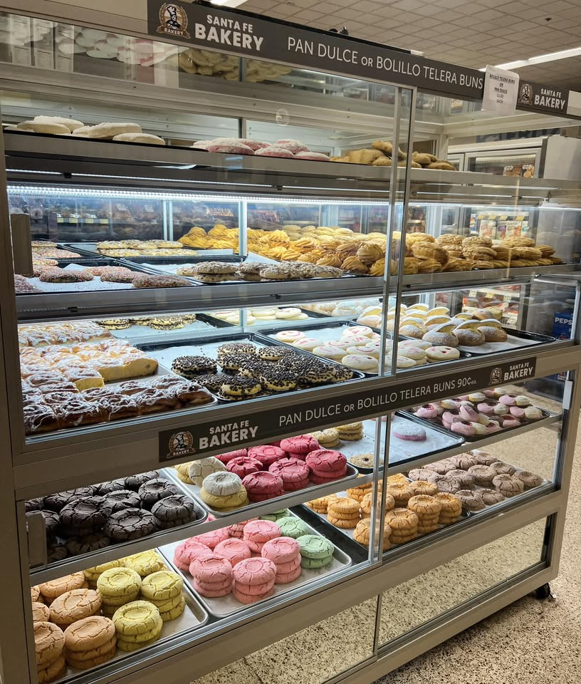
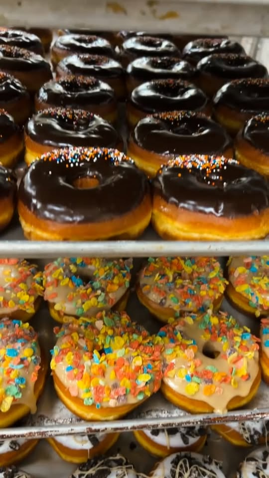
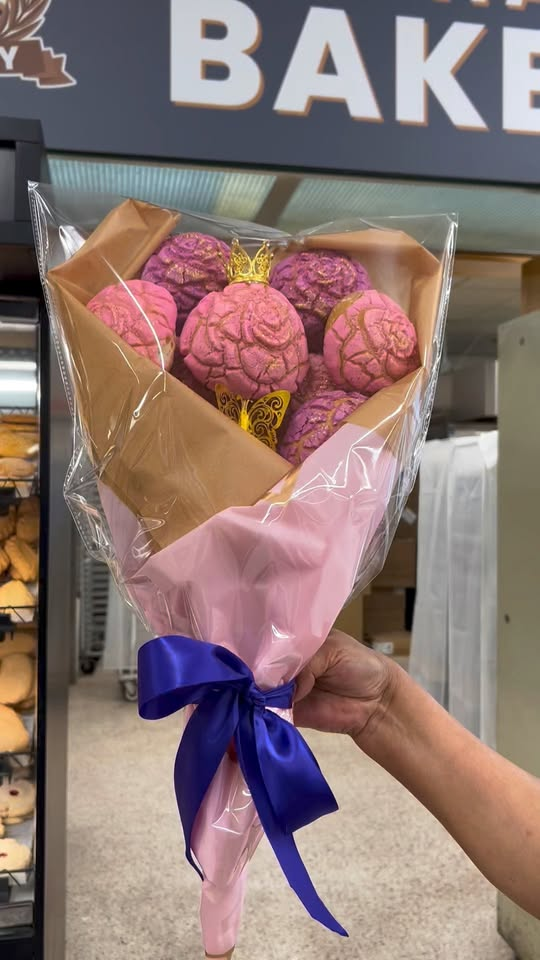

.𝐂𝐚𝐬𝐚 𝐝𝐞 𝐥𝐚𝐬 𝐜𝐨𝐧𝐜𝐡𝐚𝐬 .
𝐏𝐚𝐧𝐚𝐝𝐞𝐫𝐢́𝐚 𝐲 𝐑𝐞𝐩𝐨𝐬𝐭𝐞𝐫𝐢́𝐚
¡Pasa por tu pan dulce! Tenemos deliciosas donas , empanadas de todos los sabores! ¡Y mucha más variedad para que disfrutes! Te esperamos
star
4.4
Reviews Google
favorite
2,300+
Facebook Likes



